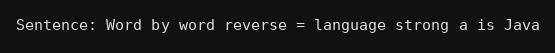

package strings;
import java.util.Scanner;
public class Q082 {
public static void main(String[] args) {
Scanner kb = new Scanner(System.in);
System.out.print("Sentence: ");
String s = kb.nextLine();
String w[] = s.split(" ");
String n = "";
for(int i=w.length-1;i>=0;i--){
n = n + w[i];
if(i!=0) n = n + " ";
}
System.out.println("Word by word reverse = "+n);
}
}